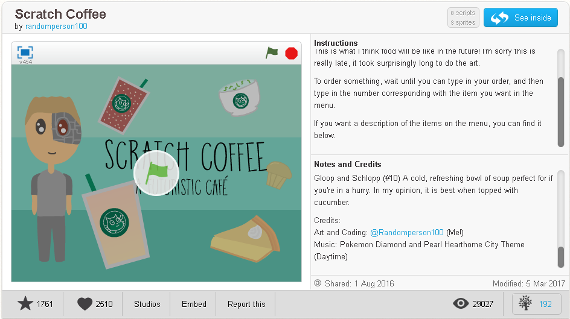

https://scratch.mit.edu/projects/146266166/
I did not help with that game I just wanted to share it! (TURBO MODE IS REQUIRED JUST HOLD SHIFT ON THE FLAG!)
PICTURES!
http://imgur.com/dNoqqiy

https://scratch.mit.edu/projects/146026485/
I did not help with that game I just wanted to share it!
Description: Ah, the GameCube controller is a beautiful thing, so I wanted to recreate it in Scratch! The music is a random cycle of music from GameCube games
PICTURES!
http://imgur.com/a/XSGgt

My nonsense... "I don't know, I just like the Gamecube... (Also, I like Zelda OOT AND MAJORAS MASK!)" - Cooper 2017
https://scratch.mit.edu/projects/117204640/
Menu: To order something, wait until you can type in your order, and then type in the number corresponding with the item you want in the menu. Item Descriptions: Iced Coffee (#1): This one hasn't really changed at all. Most people in the future prefer their coffee cold instead of hot. Banana Frappuccino (#2): This is the most popular drink at Scratch Coffee! It is usually eaten with a slice of Banana Cream Pie. Raspberry Iced Tea (#3): This is a sweet tea that lots of people enjoy in the morning, for breakfast. Apple Lemonade (#4): This drink is the perfect combination of sweet and sour. Enjoy it on the go or right here in the comfort of Scratch Coffee Bacon Soda (#5): Do you like bacon? How about soda? If you said yes to either of those questions, this savory drink is for you! Sea Soup (#6): If you admire either the sea or @Csoup's projects, I'd recommend you try this delicious soup, topped with fresh sea salt and seaweed. Grass Muffin (#7): This muffin is most popular in the beginning of the year, as it is a treat fresh out of the oven to help you warm up in the frigid outdoors. Oh and also People make new year's resolutions to eat healthier, and I guess this looks healthy to them. Charcoal Donut (#8): A glazed donut topped with some charcoal powder. Honestly, you'll barely be able to tell the difference between that and powdered sugar! Banana Cream Pie (#9): A slice of pie fresh from the oven, best enjoyed with a cold Banana Frappuccino. Gloop and Schlopp (#10) A cold, refreshing bowl of soup perfect for if you're in a hurry. In my opinion, it is best when topped with cucumber.
Credits: Music: Pokemon Diamond and Pearl Hearthome City Theme (Daytime)
I did not help with that game I just wanted to share it!
PICTURES!
http://imgur.com/a/lMjv7
My nonsense... "Whats food? I live on the internet." - Cooper 2017